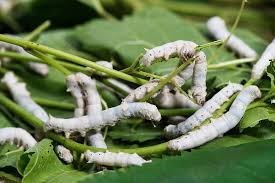
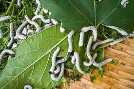
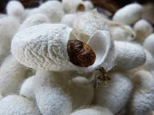
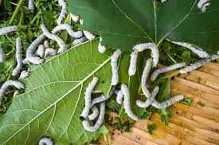
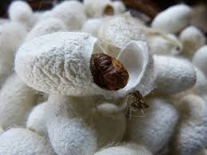
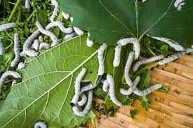
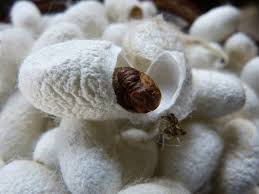
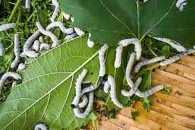
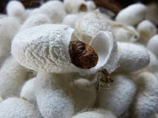

Image Gallery

 







This portal is designed to provide silk cocoon rearing farmers with up-to-date information on silk farming, including best practices, market trends, and government policies.
If you have any questions or need assistance, feel free to reach out to us. We are here to help!
Email: support@silkfarmingportal.com | Phone: +123-456-7890